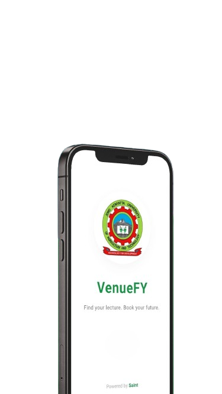
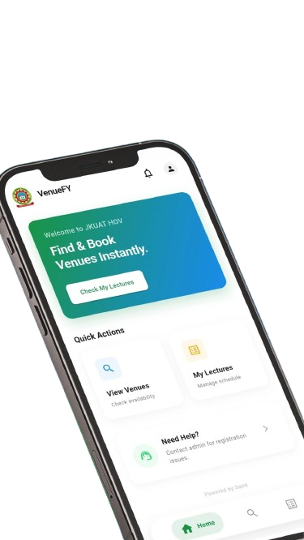
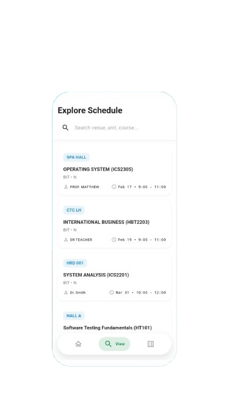

Complete UX Breakdown
Explore the detailed operation of our attendance system organized by Student, Class Rep, and the Step-by-Step Flow.
🎓 The Student Experience
Designed to be completely passive until it's time to mark attendance.
When a Class Rep opens an attendance session for your lecture, you receive a Push Notification: "Attendance is Open! 📍 [Unit Code] session has started. Tap to mark your attendance."
You use the app to "scan in". The system secretly verifies your Eligibility (Course/Group validity) and Timing (whether the session is still active). Once successful, you are marked as "Scanned".
Phone died? Camera broken? If you cannot scan, you must physically go to the Class Rep to be added manually. You cannot bypass the attendance logic.

👑 The Class Rep Experience
The Class Rep holds the authority for the class session and acts as the administrative manager.

The Rep starts the session on the booked date. Automatically, the Rep is marked Present and push notifications are instantly blasted to all eligible students.
Students present but unable to scan can be manually added by the Rep securely via their
ID/Registration number. The student is logged with a manual: true flag.
After the grace period or lecture concludes, locking attendance rejects further student scans and auto-marks the venue booking as completed.
Hit an endpoint anytime to generate or view Attendance PDF Reports natively, populated with the list of present members.
🔄 Behind The Scenes
Chronological order of events during a standard VenueFY lecture.
The system verifies the current time matches the lecture date. The Rep taps "Start Attendance". The Server creates an AttendanceSession, ties the BookingId, and marks the Rep as Present.
The server queries all students matching the lecture's Course + Group (or students explicitly mapped) and fires off targeted FCM push notifications to their phones.
Students receive the notification, open the app, and independently scan in. For every scan, their ID and Name populate the session while tracking a system log.
The Rep intervenes directly to input IDs of students physically present but technically unable to scan. The system categorizes these entries correctly.
The Rep taps "Close Attendance". A closedAt timestamp effectively halts mapping attempts. The
core venue booking triggers a flip to completed: true.
Both Reps and Admins can now download the beautifully compiled PDF displaying manual vs scanned logs, updating overarching administration metrics actively.
